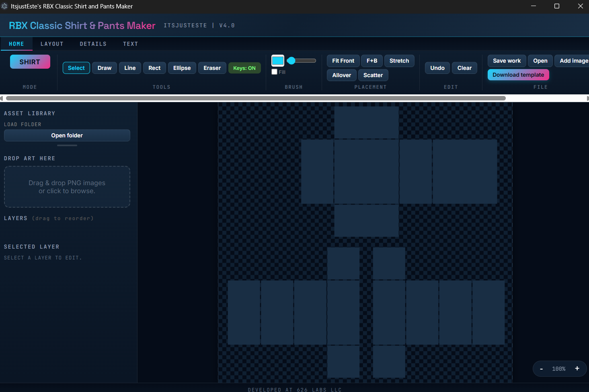
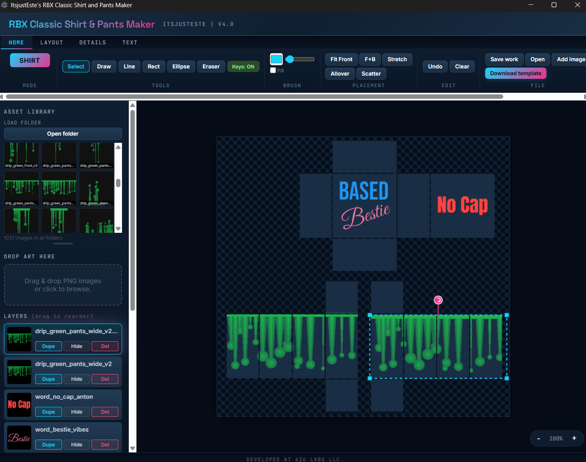
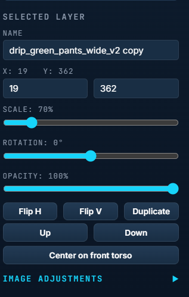
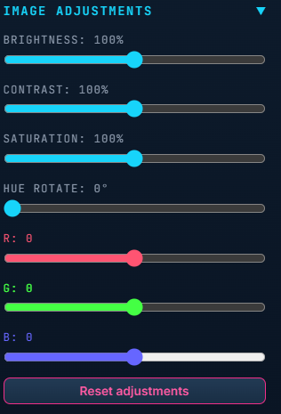
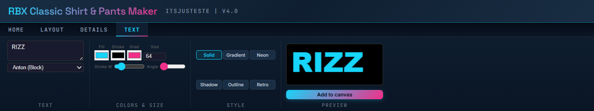
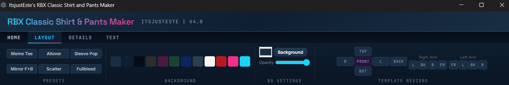
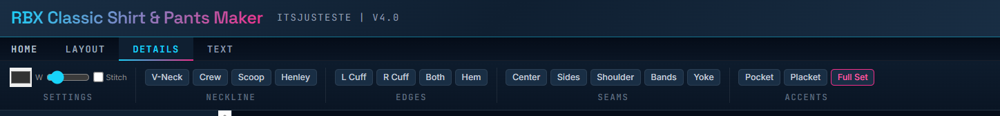

A native editor for Roblox Classic R15 shirt and pants templates. Layers, non-destructive image adjustments, word art and drawing tools, on a large canvas that fills the window and is built for the exact 585×559 template grid.
Imagine Something Else.
The whole editor fits in one window. Ribbon up top, asset library and layers on the left, the canvas in the middle, a 3D preview on the right.







Roblox Classic templates have a specific 585×559 grid: torso, arms, legs, waist, each with exact regions. This editor knows that grid by heart.
Drag to reorder, duplicate, hide, or delete. Every layer keeps its own transform and adjustment state. On-canvas handles for move, scale and rotate. The scroll wheel scales. Arrow keys nudge.
Brightness, contrast, saturation, hue rotate, plus per-channel RGB shift. Every slider updates the canvas as you drag. Baked into the exported PNG. Reset in one click.
Precise torso, arm, leg, and waist regions. Mode toggle between Shirt and Pants templates. A mask overlay shows what will actually show on the model. Placement buttons for Fit Front, F+B, Stretch, Allover and Scatter.
Load the bundled Drips and Word art packs, or point at a folder. Drag a thumbnail to the canvas and the image lands where you drop it. Click to fit it in the front slot. Right-click for full-template scale.
Solid, gradient, neon, shadow, outline, retro. Live preview, adjustable stroke and angle. Lines break where you press Enter. Add to canvas places the text at 85% of the front slot, whatever the size box says.
V-neck, crew, scoop and henley collars. Cuffs, hems, side seams, pockets, plackets, shoulder stripes, arm bands and back yokes. Adjustable width and color, with an optional stitched look.
Images load from disk. Projects save to disk. Templates download to disk. The app makes no network requests, and its fonts are bundled. No analytics, no cloud sync. The privacy policy lists the few small files the app keeps and where.
Save your workspace as a .r15proj file and reopen it later with every layer and adjustment preserved. Undo and redo cover every edit, 30 steps deep. Export the finished 585×559 PNG when you're ready to upload to Roblox.
A Classic or R15 avatar wearing your template, updated as you edit. Drag to turn it, double-click to face front. Hide it with one checkbox when you need the room.
While you have unsaved changes, RBX15 keeps a copy of your work every 60 seconds, never over your own file. After a crash, the next launch offers to restore it.
A Recent button beside Open lists your last 10 projects. The same list sits on the taskbar jump list. Double-click a .r15proj in Explorer and it opens in its own window.
Press Ctrl+V and the image on your clipboard becomes a new layer on top, with its transparency kept. Image files copied in Explorer paste too.
Windows 10 (version 1809) or 11, 64-bit. Nothing else to install: the app carries its own .NET runtime.
Get RBX15 Classic Shirt and Pants Maker from the Microsoft Store. It installs and updates itself, and Explorer opens .r15proj files in it.
Or download RBX15-Maker-v5.0.0-portable-win-x64.zip from Releases, extract it anywhere and run RBX15.App.exe. The zip is unsigned, so SmartScreen may ask you to confirm the first launch.
Quit RBX15 before updating, and save your work first. With the zip, extract the new version into a fresh folder.
git clone https://github.com/estevanhernandez-stack-ed/RBX15-Shirt-and-Pants.git
cd RBX15-Shirt-and-Pants
dotnet build src/RBX15.slnx -c Release
dotnet run --project src/RBX15.AppThe .NET 10 SDK on Windows. scripts/build-msix.ps1 builds the MSIX and the portable zip.
A native Windows app on WPF and .NET 10, self-contained, with no network requests and every font bundled.
Autosave every 60 seconds while you have unsaved changes, and a restore prompt after a crash.
Recent projects in the File group and on the taskbar jump list. Double-click a .r15proj to open it. Ctrl+V pastes an image as a layer.
A 3D avatar preview, undo and redo that cover every edit, and an accessibility pass: focus rings and names on every control.
High-contrast themes are not supported: the app draws its own dark palette.
Screen readers read the controls, but edits made on the canvas are not announced.